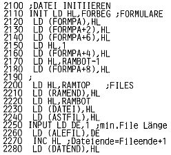

Nascom Journal |
Mai 1982 · Ausgabe 5 |
Zunächst einige Anmerkungen zu Teil 1. In die Routine REDUZ hat sich ein Fehler eingeschlichen. Das Verkürzen der Files funktionierte einwandfrei, wenn man nicht ausgerechnet das letzte File verändern wollte. Hierbei mußte das ganze Programm zusammenstürzen, da sich für den Rest der Datei die Länge 0 ergab und der LDIR Befehl nun den ganzen Speicher verschob. Zu beheben ist der Fehler durch Eintragen von INC BC vor dem LDIR in Zeile 1590.
Nicht so tragisch, aber ärgerlich ist die Tatsache, daß beim Aufruf von INPUT auch bei Bearbeitung von Formularen RAMTOP (Speicherende für Files) in die Formularparameter geladen wurde. Diese Manipulation muß vor INPUT bereits in INIT eingetragen werden.
Beim Ausdrucken von Files in bestimmtem Format hat sich als vorteilhaft erwiesen, vor dem Ausdruck des Formulars ein New Line einzufügen, damit das nächste Formular nicht mitten in der Zeile beginnt oder (da ja vor dem BELL Zeichen immer ein Space steht) eingerückt wird.
In der Routine EINGAB wurde beim Drücken von New Line noch die automatische Ausgabe eines Space eingefügt. Dies erleichtert das Auffinden von Daten in maskierten Files (Teil 2).
Die Teilnehmer am Rundlauf müssen zur Korrektur das Hexdump von 10BE-10EC dem Listing in diesem Heft anpassen.
Wie bereits angekündigt, soll das Programm laufend erweitert werden, Hier nun die erste Erweiterung: die Erstellung und Verarbeitung maskierter Files.
Im Menü sind zusätzlich die Möglichkeiten
„Berechnungen B“ und
„Maskierte Files M“ vorgesehen worden. Das Drücken von B
erzeugt vorläufig einen Sprung nach #1C00 , wo möglicherweise
zukünftige Berechnungsroutinen beginnen könnten. Mit M springt man nach
#1922 , wo folgende Programme zur Wahl stehen:
"Maskierte Datei initiieren 1" "Maskierte Files ausgeben 2" "Eingabe in maskierte Files 3"
Bei der Auswahl von „1“ erscheint in der Titelzeile die Aufforderung „Data Input“. Nun kann man mit frei beweglichem Cursor ein Formular erstellen (in unserem Beispiel eine Schülerkartei), wobei der Doppelpunkt, gefolgt von Space, angibt, daß nun ein Datenwort folgt, welches im File abgespeichert werden soll. Dieses wird durch Space abgeschlossen. Das nächste Datenwort muß wieder durch Doppelpunkt eingeleitet werden. Die Anzahl der Zeichen nach dem Doppelpunkt ist nun das für alle Files verbindliche Format und ermöglicht Berechnungen und auch formatierten Ausdruck.
Es empfiehlt sich, bei der Eingabe von z.B. Namen zunächst eine entsprechende Anzahl von A0 einzugeben (Graph+ Spacer), da diese zwar Platz für das formatierte Datenwort freihalten (Space würde als Beginn des nächsten Wortes interpretiert), von den meisten Druckern aber einfach als Space ausgegeben werden. Aus dem gleichen Grund wird vom Programm bei der Eingabe in
| Seite 24 von 32 |
|---|